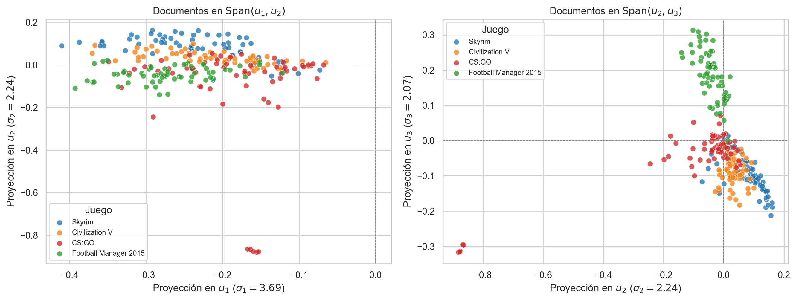

Figura 1: Decaimiento de los primeros 40 valores singulares (izquierda) y energía espectral acumulada (derecha).
Se construyó un corpus de n = 240 reseñas públicas de usuarios de Steam en inglés, extraídas mediante streaming desde el repositorio abierto mulhod/steam_reviews en GitHub (https://github.com/mulhod/steam_reviews). Para garantizar que cada documento aporte suficiente contenido léxico, se filtraron reseñas de entre 300 y 3000 caracteres con al menos 200 letras alfabéticas, seleccionando 60 reseñas por título en cuatro videojuegos de géneros muy contrastantes. Todo el proceso es reproducible ejecutando download_data.py o cargando directamente la instantánea data/steam_reviews.csv.
| Videojuego | Género | Documentos | Caracteres prom. | Palabras prom. | Horas jugadas (mediana) |
|---|---|---|---|---|---|
| The Elder Scrolls V: Skyrim | RPG / Fantasy | 60 | 986.2 | 180.2 | 174.0 |
| Sid Meier's Civilization V | Strategy 4X | 60 | 1014.3 | 183.2 | 201.4 |
| Counter-Strike: Global Offensive | Tactical FPS | 60 | 1044.2 | 190.8 | 618.2 |
| Football Manager 2015 | Sports Sim | 60 | 1109.4 | 206.9 | 248.0 |
Dado que los cuatro títulos pertenecen a géneros claramente diferenciados, esperamos que la matriz término-documento presente una estructura latente dominada por cuatro grupos temáticos asociados a cada juego: vocabulario de exploración y modificaciones en Skyrim (mods, dragon, quests), gestión de imperios y turnos en Civilization V (turn, city, war, victory), disparo competitivo en CS:GO (team, hacker, kill, matchmaking) y dirección técnica de fútbol en Football Manager 2015 (players, football, match, tactics). Asimismo, anticipamos que la primera componente singular capturará un eje transversal común a las reseñas (game, play, hours, fun), mientras que las componentes siguientes separarán los géneros, con posible solapamiento en reseñas enfocadas en rendimiento o políticas de Steam.
Para construir el vocabulario se aplicó normalización a minúsculas, tokenización alfabética de palabras de al menos 3 letras (\b[a-zA-Z]{3,}\b), eliminación de stopwords estándar en inglés y filtrado por frecuencia documental (min_df=3, max_df=0.80) para descartar erratas aisladas y términos demasiado ubicuos. En lugar de conteos crudos, se empleó ponderación TF-IDF con frecuencia sublineal (1 + log(tf)), evitando que reseñas muy extensas o repeticiones dominen la norma de las columnas.
El vocabulario final quedó conformado por m = 1371 términos. Transponiendo la matriz entregada por TfidfVectorizer de scikit-learn, se construyó la matriz término-documento A ∈ ℝ1371 × 240 (filas = términos, columnas = documentos), con una densidad de entradas no nulas del 3.40% (esparsidad 96.60%) y norma de Frobenius ||A||F = 15.4919.
Se calculó la descomposición SVD reducida A = U Σ VT mediante np.linalg.svd(A, full_matrices=False), obteniendo U ∈ ℝ1371 × 240, Σ = diag(σ1, …, σ240) y VT ∈ ℝ240 × 240, con error de reconstrucción ||A − UΣVT||F = 5.25 × 10−14.
Los primeros valores singulares son σ1 = 3.692, σ2 = 2.241, σ3 = 2.066 y σ4 = 1.973, observándose un salto espectral claro hacia σ5 = 1.677 seguido de una cola de decaimiento gradual. Este codo en k = 4 refleja directamente la presencia de los cuatro géneros del corpus (reteniendo el 11.17% de la energía espectral). Para tareas de exploración semántica y similitud coseno se eligió k = 20 (24.98% de la energía), un compromiso adecuado para capturar matices subtemáticos sin arrastrar el ruido de alta frecuencia de la cola.
Siguiendo la geometría de la SVD, la proyección ortogonal de cada documento (columna de A) sobre Span(ua, ub) tiene coordenadas (uaT A:,d, ubT A:,d) = (σa Vd,a, σb Vd,b), mientras que la proyección de cada término (fila de A) sobre Span(va, vb) tiene coordenadas (At,: va, At,: vb) = (σa Ut,a, σb Ut,b).


Como se aprecia en la Figura 2, en Span(u1, u2) todos los documentos tienen coordenada negativa en u1 porque la primera componente (asociada a una matriz no negativa) captura el eje promedio del lenguaje de reseñas. Al pasar a Span(u2, u3) y Span(v2, v3) (Figura 3), los géneros se separan con nitidez: Football Manager 2015 asciende hacia u3 > 0 (players, goals, engine, football, manager, match), CS:GO se ubica a la izquierda en u2 < 0 (noob, hacker, team, kill, rage) y Skyrim se concentra a la derecha en u2 > 0 (mods, skyrim, valve, paid, bethesda).
mods, skyrim, valve, paid, mod) frente a la jerga competitiva de CS:GO (noob, hacker, team, kill, idiot). La componente 3 (σ3 = 2.066) aísla el léxico futbolístico de Football Manager (players, goals, engine, football, manager, injuries). La componente 4 (σ4 = 1.973) separa por completo a Civilization V (civilization, turn, city, ghandi, war, gandhi, victory).dragon sus vecinos más próximos son whiterun (0.90), arrow (0.88), knee (0.88), guard (0.87), capturando automáticamente el célebre meme de los guardias de Skyrim. Para gandhi aparecen khan (0.87), nuclear (0.83), empire (0.81), reflejando el icónico meme de Nuclear Gandhi en Civilization V; y para tactics emergen patched (0.91), players (0.86), goalkeeper (0.86), injuries (0.85).csgo_01 y csgo_36, similitud 1.000) corresponde a un copypasta humorístico repetido por distintos usuarios en CS:GO. Entre juegos distintos, el par más cercano (civilization_v_55 y csgo_21, similitud 0.872) comparte un tono narrativo casual centrado en anécdotas con amigos (fun, people, friend, game) con bajo uso de vocabulario técnico.Contrastación con la hipótesis: La hipótesis inicial se confirma: la SVD descubre la estructura de los cuatro géneros sin supervisión, exhibe un salto espectral en k = 4 y separa claramente documentos y términos en las componentes 2, 3 y 4. Como resultado inesperado, la señal dominante de Skyrim no correspondió a dragones o fantasía, sino a la polémica de los paid mods de Valve y Bethesda vigente en la fecha del corpus, mostrando cómo LSA detecta eventos coyunturales reales en los datos.
Límites del método y del corpus: El enfoque de bolsa de palabras con TF-IDF ignora el orden sintáctico, las negaciones y el sarcasmo, muy frecuente en reseñas de Steam; además, la linealidad de la SVD no resuelve por sí sola la polisemia cuando un término (como engine) aparece en contextos distintos. Por otra parte, el corpus se restringe a 240 reseñas en inglés de una ventana temporal específica y es sensible a textos repetitivos (copypastas). Como herramienta exploratoria, LSA resulta sumamente efectiva para descubrir patrones latentes y guiar la lectura cualitativa del corpus.